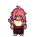

IRecord
Give a task a time.
The agenda creates, edits, filters, and completes tasks stored locally in SQLite.
Task {
title: "Take a break"
due: "10:30"
done: false
}An independent desktop project
Persona is an offline desktop companion that gives everyday tasks a little more presence — with a lively pixel-art friend and reminders that appear right when you need them.

PERSONA / IDLE// The problem
Digital reminders are easy to dismiss and just as easy to lose in a crowded list. Even a useful task can start to feel like one more notification asking for attention.
Persona explores a more personal alternative: a quiet desktop companion that stays nearby, moves on its own, and brings a reminder into view when its time arrives.
Built to run locally, Persona keeps its schedule in a small SQLite database and makes the reminder itself feel like a friendly interruption — one you can complete or simply close.
// Architecture
Three parts work together: a simple task record, a lightweight schedule check, and a desktop character that makes the result visible.
The agenda creates, edits, filters, and completes tasks stored locally in SQLite.
Task {
title: "Take a break"
due: "10:30"
done: false
}A Qt timer checks pending tasks every two seconds and emits each due reminder once.
every 2 seconds:
for task in pending:
if task.due <= now:
emit(task)Persona reacts with an animation and a floating post-it that can mark the task complete.
when reminded:
animate("emote")
show_post_it(task)
complete_on_click()// Demo
This browser-only preview shows the shape of a Persona reminder. It does not connect to the desktop app or save a task.
A little company, right on time.
Choose an example, then preview a reminder. No task will be created or stored.
// Source
The project is written in Python with PyQt5, and stores tasks in SQLite. Explore the source, run it locally, or adapt the idea for your own workflow.